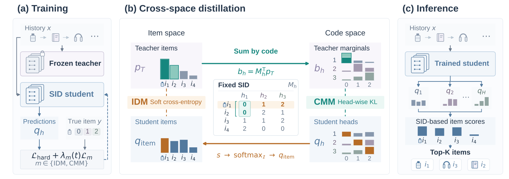
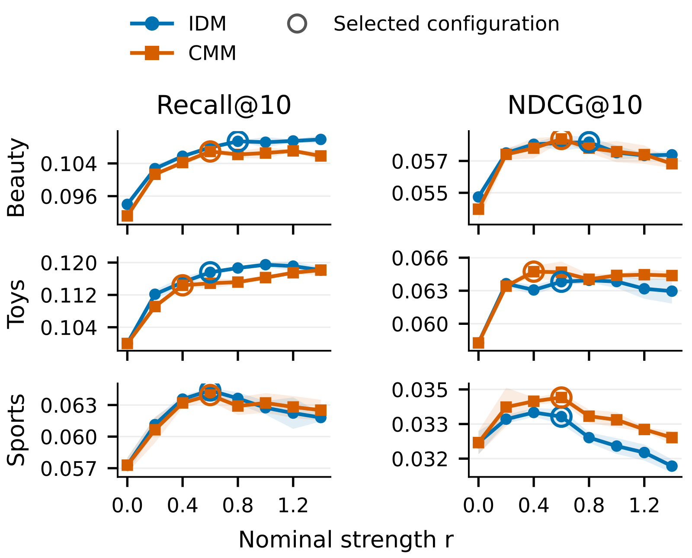

目录 · 9 节
1它到底在解决什么问题？2整体流程：一个老师，两种换算路线3路线一：把学生的预测拼回物品，再和老师比（IDM）4路线二：把老师的概率摊到每一位编号上（CMM）5为什么还要单独调蒸馏的权重？6两条路线真的有用吗？7我认为它的局限8一个推荐团队可以怎么试9结论与评价做生成式推荐的团队值得读。它没有换模型结构，只回答了一个很实际的问题：手里已经有一个训练好的老式序列推荐模型，怎么把它“知道的东西”教给用 Semantic ID 做推荐的新模型。核心思想一句话：老模型给出的是“下一个是哪件物品”的概率，新模型预测的是“编号每一位是什么”，论文给了两条换算路线，把前者的概率搬到后者能直接学的形式上。效果很直接：在 Amazon Beauty 上，Recall@10 从 0.0940 提到 0.1094；三个数据集平均下来，第一条路线让 Recall@10 涨 15.39%，第二条让 NDCG@10 涨 8.28%。
它到底在解决什么问题？
先说背景。Semantic ID 推荐给每件物品编一串离散编号，比如三位的 (0, 1, 2)，模型通过预测下一件物品的编号来做推荐。本文研究的是其中的“并行”一类：模型一次同时预测编号的所有位，不像 TIGER 那样一位一位往后生成。排序时，把一件物品每一位编号的预测概率取对数再平均，就是这件物品的分数。
这类模型平时用“硬标签”训练：用户下一个点了哪件物品，就要求每一位都预测成那件物品的编号，其余一律算错。问题在于，这只告诉模型正确答案是什么，没有告诉它其他候选离正确答案有多近。
举个例子（示意）：一个用户最近买了婴儿沐浴露和洗澡玩具，下一件实际买的是浴巾。硬标签只说“浴巾对，其余都错”。可一个训练好的 SASRec 会告诉我们：浴巾 50%，婴儿浴盆 30%，口水巾 15%，充电宝 5%。浴盆和浴巾一样合理，充电宝基本不相干，这些分寸是硬标签里没有的。
| 候选物品（示意） | 编号 | 硬标签 | SASRec 概率 |
|---|---|---|---|
| 浴巾（实际下一件） | (0, 1, 2) | 1 | 0.50 |
| 婴儿浴盆 | (0, 2, 1) | 0 | 0.30 |
| 口水巾 | (1, 1, 2) | 0 | 0.15 |
| 充电宝 | (2, 0, 0) | 0 | 0.05 |
难点是两边说的不是一种语言：SASRec 给的是一万多件物品上的概率，新模型输出的是每一位编号上的概率。知识蒸馏要做的，就是把前者换算成后者能学的目标。
整体流程：一个老师，两种换算路线

整个流程分三步：
- 训练一个普通的 SASRec 当老师，训练完冻结。它对每段用户历史给出全部物品上的概率。
- 学生是一个并行编号模型，照常学硬标签，同时多学一个蒸馏目标。蒸馏目标有两种选法，就是下面要讲的 IDM（物品分布对齐）和 CMM（编号边缘分布对齐），两者分开训练。
- 上线时只用学生，推理方式和原来完全一样，没有额外开销。
两条路线的分工可以这样记：IDM 让学生迁就老师，在物品层面对齐；CMM 让老师迁就学生，在每一位编号上对齐。下面拆开讲。
路线一：把学生的预测拼回物品，再和老师比（IDM）
为什么需要这一步？老师说的是物品，学生说的是编号，最直接的办法是把学生的话翻译成物品。IDM 就是这么做的：每件物品的分数等于它各位编号预测分数的平均，再对全部物品做一次 softmax，得到学生眼中“下一件是哪件物品”的概率，然后用交叉熵把它往老师的概率上拉。
这样做有一个连带效果。很多物品会在某一位上共用同一个编号，比如浴巾和浴盆第一位都是 0。学生调高第一位编号 0 的分数，会同时抬高这两件物品。因为最后要在全部物品上做 softmax，抬高一批就意味着压低另一批，各位的预测被这一步绑在一起训练。IDM 直接优化的就是排序时用的那个分数，所以它更擅长把该召回的物品捞进前几名。
路线二：把老师的概率摊到每一位编号上（CMM）
另一条路反过来，把老师的话翻译成编号。CMM 的做法是：对编号的每一位，把这一位编号相同的物品概率加起来，得到这一位上每个编号的目标概率。公式只有一行：
这里 是用户历史， 是老师给物品 的概率， 是物品 第 位的编号， 就是第 位取编号 的目标概率。直觉上，它回答的是“按老师的看法，下一件物品第 位是 的可能性有多大”。
用上面的表算一下（示意）：第一位是 0 的有浴巾和浴盆，目标概率是 0.50 + 0.30 = 0.80；第一位是 1 的只有口水巾，0.15；是 2 的只有充电宝，0.05。第二位就不同了，浴巾和口水巾第二位都是 1，加起来是 0.65；浴盆是 2，得 0.30。硬标签在第一位只会说“编号 0 是 100%”，CMM 则给出 0.80、0.15、0.05 这样有分寸的目标。
然后每一位都用 KL 散度把学生的预测往这个目标上拉。为什么只对齐每一位就够？衡量标准是“老师眼中完整编号的分布”和“学生各位预测相乘得到的完整编号分布”之间的 KL 散度。作者证明，这个散度里和学生有关的部分，正好等于各位 KL 散度之和；所以在学生各位独立预测的前提下，最优解就是让每一位的预测等于这一位的目标概率。CMM 直接校准每一位的预测，所以它更擅长把前几名的先后顺序排对。
为什么还要单独调蒸馏的权重？
学生最终的训练目标是“硬标签损失 + 权重 × 蒸馏损失”。这里有个容易忽略的问题：两种损失的梯度大小天然不一样。硬标签把全部误差压在一个正确答案上，软目标把误差摊在很多候选上，所以同样的权重下，两者对模型的推动力度可能差很多。
作者的做法是在训练初期先跑几批数据，每批分别算出硬标签损失和蒸馏损失对全部可训练参数的梯度，取各自的 L2 范数，用“硬标签梯度范数 ÷ 蒸馏梯度范数”得到一个比值。几批比值的中位数就是换算系数，再乘一个人为设定的强度，作为蒸馏损失的权重。这样“强度为 1”在不同数据集、不同目标上的含义大致相同，调参时不必从头摸索。此外，蒸馏损失在训练开始时权重从小逐步加大，避免学生一开始就被老师带偏。
两条路线真的有用吗？
学生模型沿用 AsymRec 的结构，一共 48 位编号，每位 256 个可选值。数据是 Amazon 2014 的 Beauty、Toys、Sports 三个品类，物品数在 1.2 万到 1.8 万之间。
对照组是同样结构、只用硬标签训练的 AsymRec，它也是表里最强的基线。下表是论文表 2 中 Recall@10 和 NDCG@10 两列，三次运行取平均：
| 方法 | Beauty R@10 | Beauty N@10 | Toys R@10 | Toys N@10 | Sports R@10 | Sports N@10 |
|---|---|---|---|---|---|---|
| TIGER | 0.0648 | 0.0384 | 0.0712 | 0.0432 | 0.0400 | 0.0225 |
| RPG | 0.0798 | 0.0454 | 0.0885 | 0.0485 | 0.0435 | 0.0249 |
| AsymRec（硬标签） | 0.0940 | 0.0547 | 0.1002 | 0.0586 | 0.0573 | 0.0322 |
| IDM | 0.1094 | 0.0590 | 0.1176 | 0.0638 | 0.0644 | 0.0333 |
| CMM | 0.1069 | 0.0592 | 0.1144 | 0.0647 | 0.0639 | 0.0341 |
两种蒸馏在三个数据集上都超过硬标签训练。在 Toys 上，Recall@10 从 0.1002 提到 0.1176。这说明模型结构、编号和推理方式都不变，只是把老师的分寸加进训练目标，召回就能明显变好。
两者的分工也很稳定：三个数据集上都是 IDM 的 Recall 更高、CMM 的 NDCG 更高。这和前面讲的机制对得上，一个对齐排序分数，一个校准每一位。
消融实验回答了“到底是老师的哪部分信息有用”。只保留老师排第一的那件物品，或者把剩余概率平均摊开，效果都不如用完整分布。以 Beauty 为例，IDM 的 Recall@10 从完整分布的 0.1094 降到只用第一名的 0.1041。这说明真正起作用的是老师对各个候选的不同打分，而不只是多给了一个答案。
蒸馏强度的实验（见下方论文图 2）给了另一个信息：只要权重是正的，Recall@10 都比不蒸馏好；但 NDCG@10 在权重过大时会回落。这说明老师的信息主要帮学生找到更多合理的候选，而前几名的精确顺序仍然要靠硬标签守住，权重不能一味加大。
把两个分别训练好的学生分数各取一半相加，Beauty 上的 NDCG@10 还能到 0.0597，比单独任何一个都高。把两个目标放进同一个学生里一起训，反而没有这个效果。

我认为它的局限
第一，效果很依赖老师本身的质量。老师只用 25% 的数据训练时，Beauty 上 IDM 的 Recall@10 是 0.0934，比只用硬标签的 0.0940 还低。老师不够好，蒸馏就会帮倒忙。
第二，对老师概率的“软硬”程度敏感。用温度参数把老师概率调得更平均（温度 4，论文默认是 1）时，Beauty 上 CMM 的 Recall@10 掉到 0.0881，也低于硬标签基线。上线前要在验证集上把温度和蒸馏权重调好，不能直接照搬论文的设置。
第三，实验规模偏小。三个数据集都只有一两万件物品，IDM 每个样本都要在全部物品上算一次 softmax。物品到千万级时，这一步的成本论文没有讨论。
一个推荐团队可以怎么试
- 先确认手里有一个靠谱的老师。拿现有的 SASRec 或别的序列模型，看它单独的 Recall@10 是否接近或高于编号模型；老师明显更差时，先别做蒸馏。
- 先试 CMM。它只需要把老师概率按编号加总，每一位的计算量和物品数无关，最容易接进现有训练。看 NDCG@10 和排序质量是否提升。
- 再试 IDM，重点看召回。物品很多时，可以先在一个候选子集上做 softmax，验证收益后再考虑全量。
- 两个都有效时，试一下分数各取一半的融合，不用重新训练，成本最低。
结论与评价
最关键的一点是：硬标签只告诉模型哪个对，老师的概率还告诉它别的候选错得有多远，而编号模型完全可以通过简单的加总或平均学到这份信息。
| 维度 | 评价 |
|---|---|
| 问题重要性 | 高。编号模型越来越常见，怎么复用已有序列模型的知识是很多团队都会遇到的问题 |
| 方法创新性 | 中。知识蒸馏本身不新，新意在给出两种换算路线，并讲清了两者为什么各有所长 |
| 实验证据 | 中。三个数据集、三次运行、显著性检验都有，但数据规模偏小，也没有线上实验 |
| 工程成本 | 低到中。CMM 几乎不加成本，IDM 在大物品库上要处理全量 softmax |
| 是否值得尝试 | 值得。已经有序列推荐模型、正在上编号模型的团队，可以先用 CMM 做低成本验证 |
讨论
欢迎补充实验细节、复现经验或不同看法。需 GitHub 登录。
正在加载讨论…